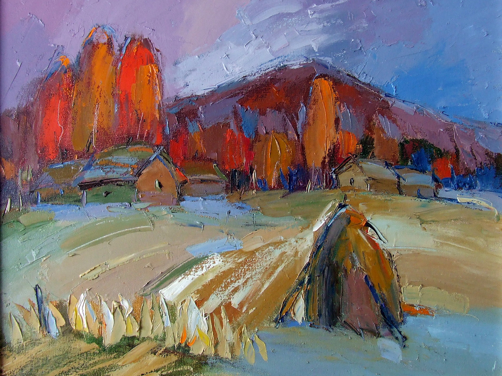
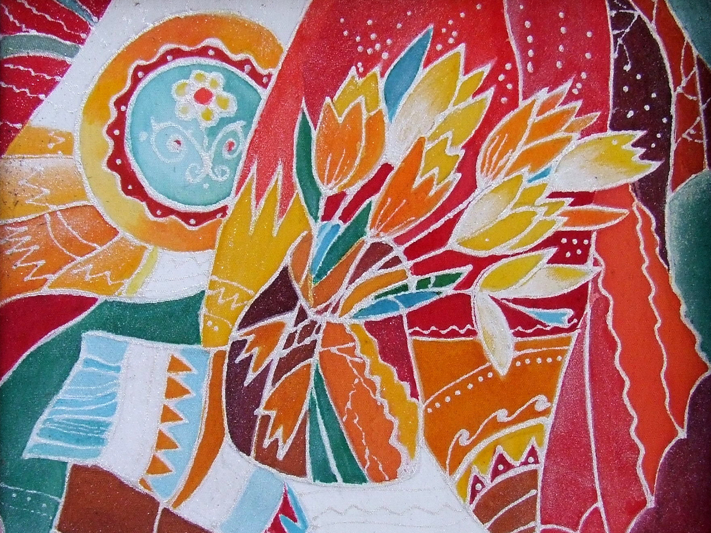
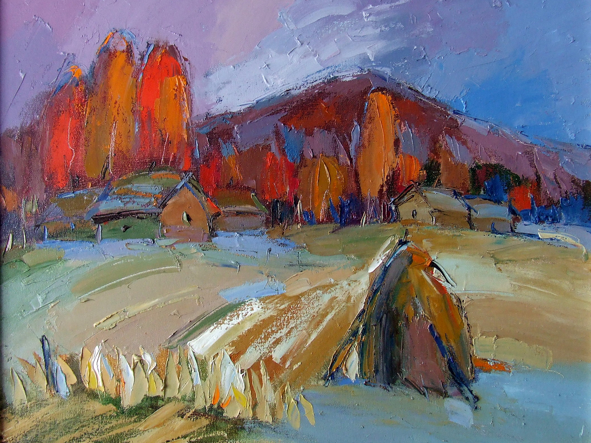
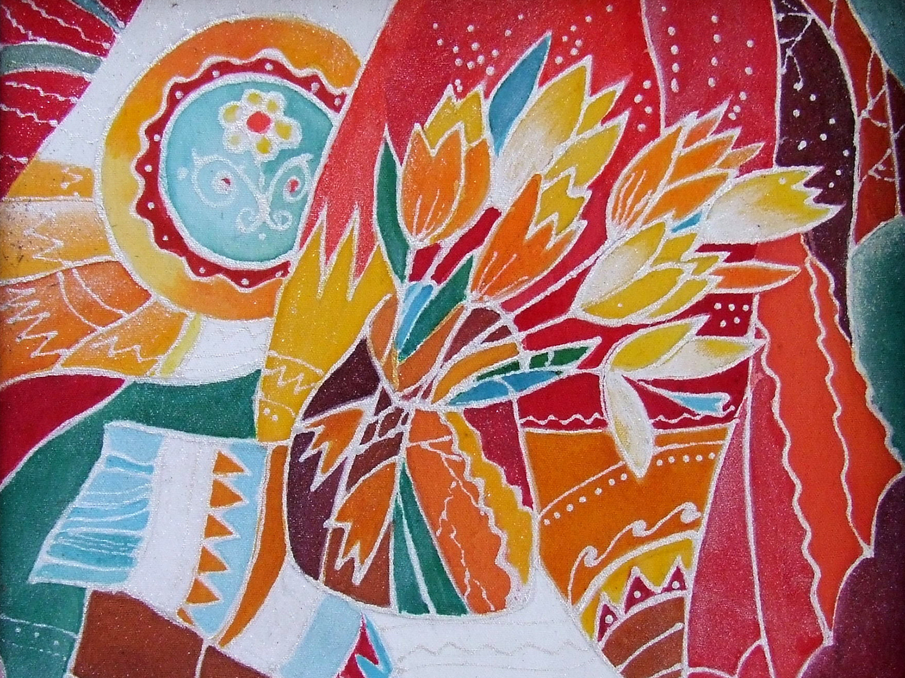
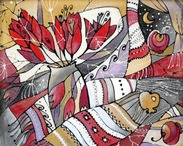
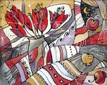
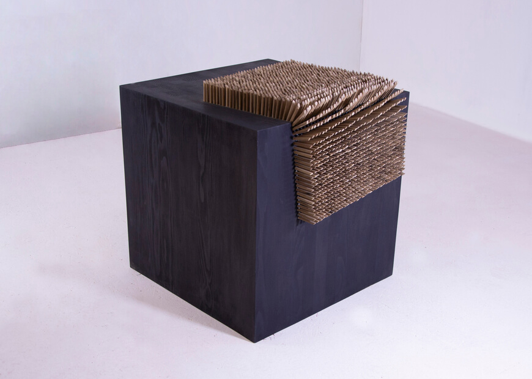
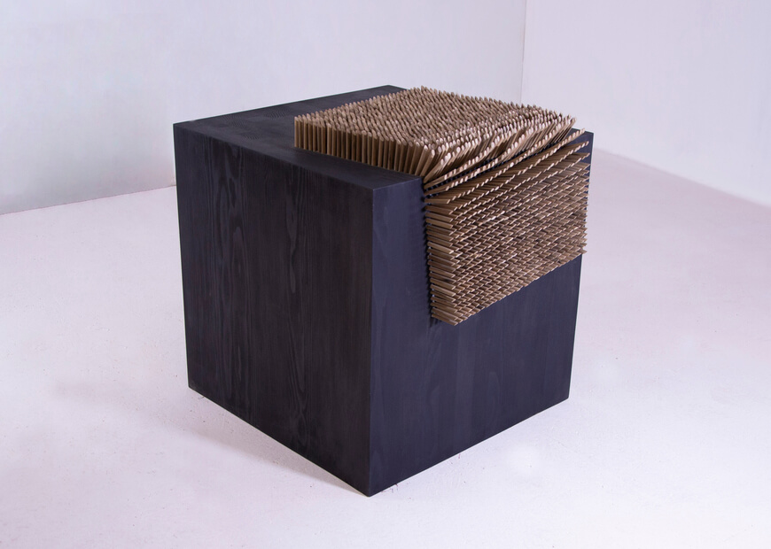

Tetiana Vytiahlovska - she was born in Buchach in 1964 (Ternopil region). From 1975 to 1978 Tetiana studied at Buchach Art School for children.
In 1983 she finished Art Weaving Department of Vyzhnytsya College of Applied and Decorative Arts.
In 1989 Tetiana finished Art Weaving Department of Lviv Institute of Applied and Decorative Arts (now – Lviv National Art Academy).
She had personal exhibitions – in Ternopil, Kyiv, Slavutych, Lviv. Since 1995 she has been a member of the National Union of Artists of Ukraine.
- Laureate of the exhibition dedicated to 400-th anniversary of the Union of Brest (Ternopil, 1995);
- Laureate of the first prize in the International exhibition 6-th Lviv Autumn Salon "High Castle 2002";
- Laureate of regional Culture Award in the category “Visual Art named after Mykhailo Boychuk” for art project "Holiday of heaven and earth" (2015, co-authored);
- Diploma in the category “For expressive language of textile" at the 1st Ukrainian Triennial of Artistic Textile (Kiev, 2004);
- Magazine “Child’s World” award at the International exhibition 10-th Lviv Autumn Salon “High Castle 2006”;
- Certificates of honor and valuable prizes from Minister of Culture and Arts (2008, 2009, 2010, 2011, 2015, 2016 р.р.) for significant contribution to the creation of spiritual values and high professional excellence.
Tetiana lives and works in Zavodske town, Chortkiv district, Ternopil region (she works as a head of the department and a teacher at School of Arts).
Mykhailo Vytiahlovskyi - he was born in Soroky, Buchach district, Ternopil region in 1963. From 1974 to 1978 Mykhailo studied at Buchach Art School for children.
In 1982 he finished Wooden Art Department of Kosiv Technical College of Folk Crafts.
In 1990 he finished faculty “Interior and Equipment” of Lviv Institute of Applied and Decorative Arts (now – Lviv National Art Academy).
He creates modern art projects, filed with deep philosophical sense. Mykhailo works as a sculptor, but also he creates many oil and acrylic paintings.
He was a participant of many regional, national and international exhibitions. He also had his personal exhibitions in Ternopil, Kyiv, Slavutych, Lviv.
Since 1995 he has been a member of the National Union of Artists of Ukraine. Mykhailo is a winner of Lviv autumn salon “High castle 2013”.
Laureate of regional Culture Award in the category “Visual Art named after Mykhailo Boychuk” for art project "Defects of the civilization" (2015, co-authored).
 


 
